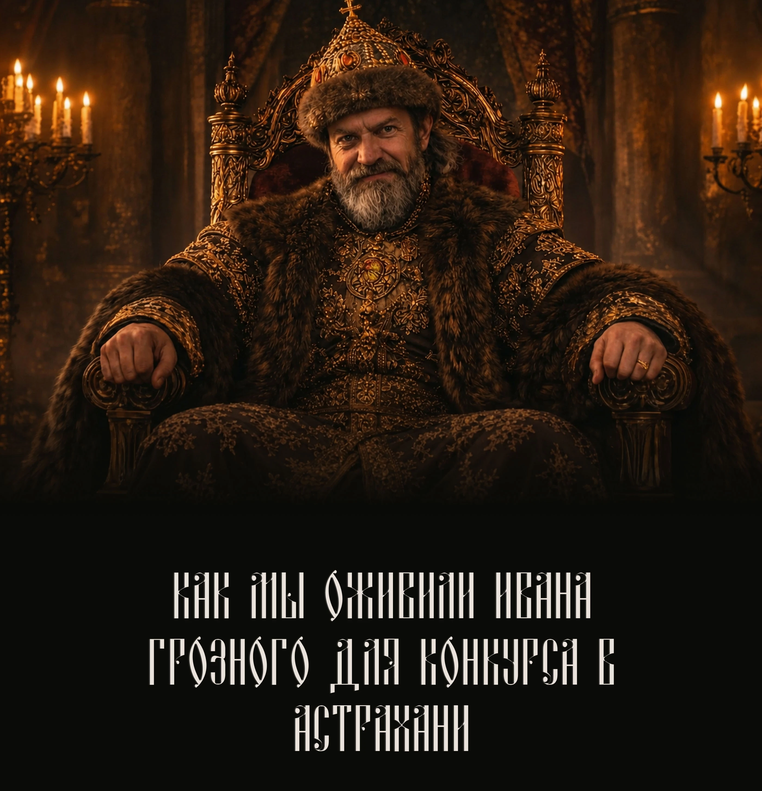
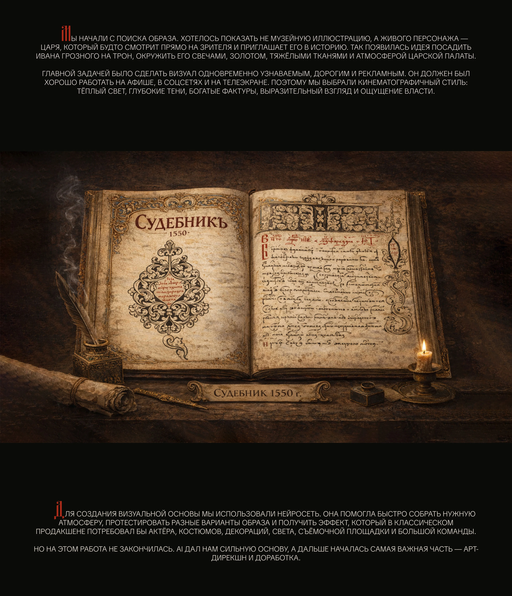
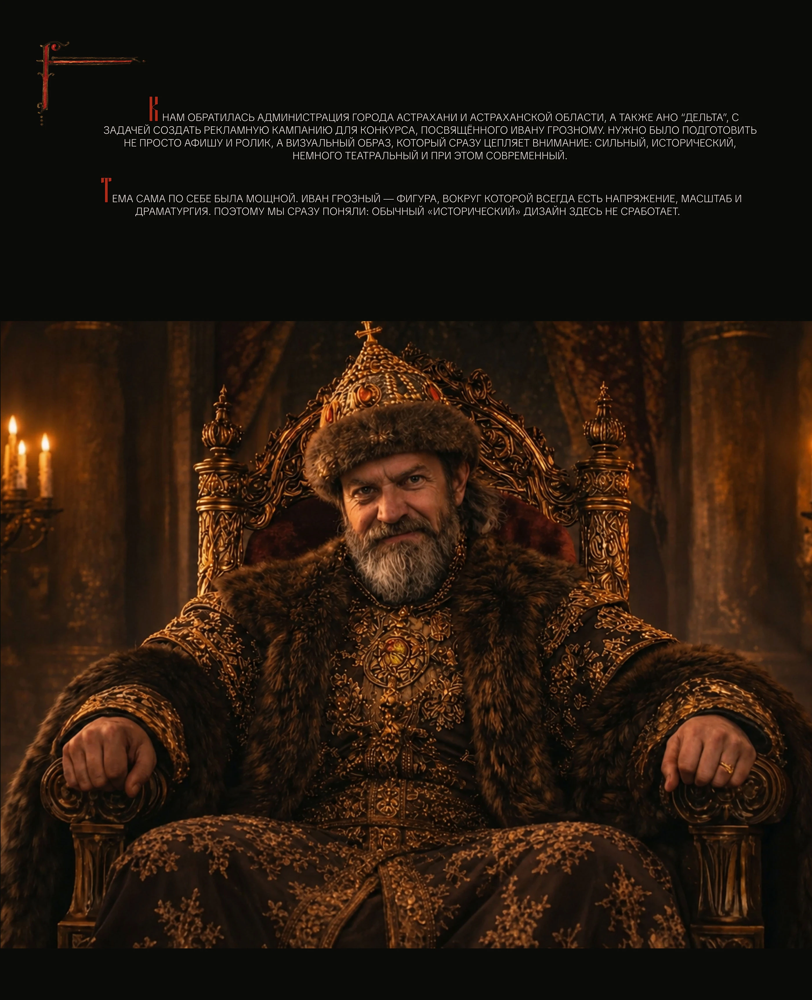
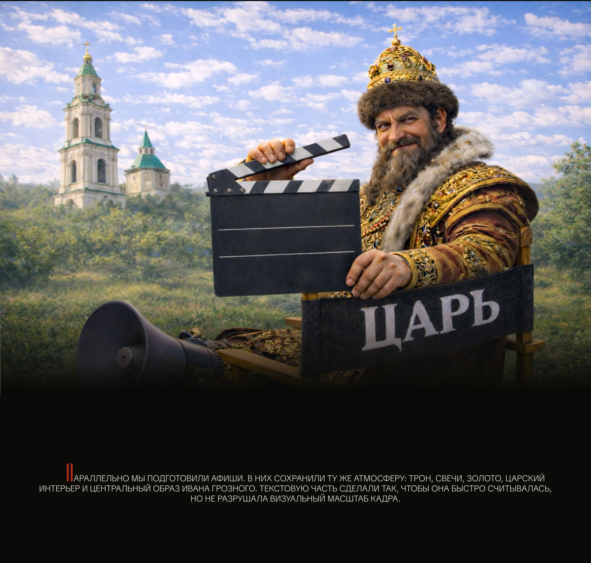
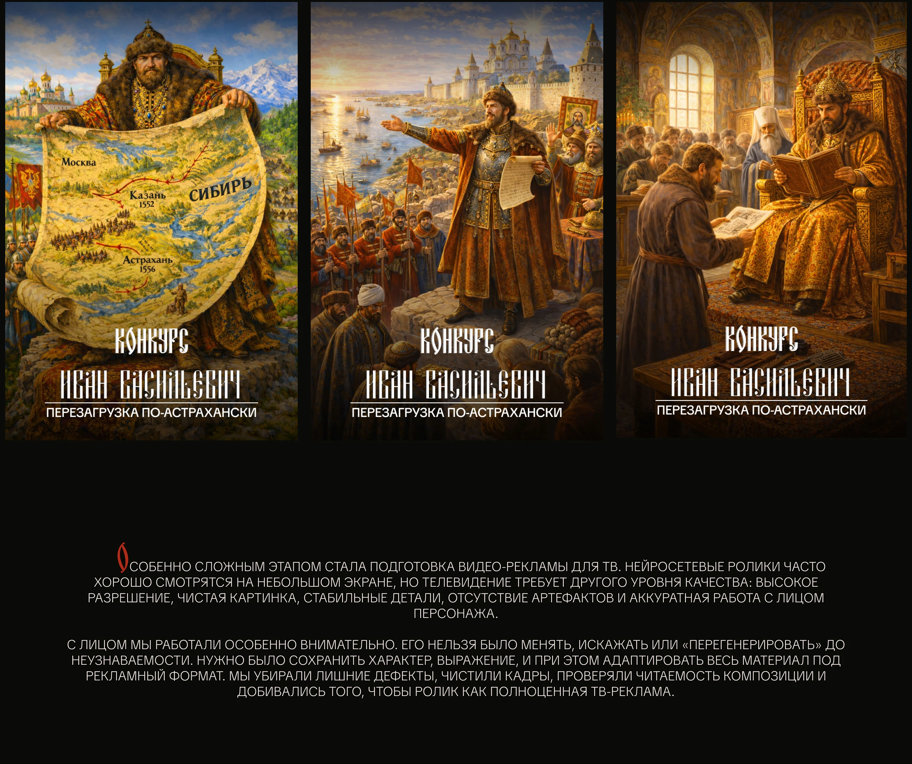
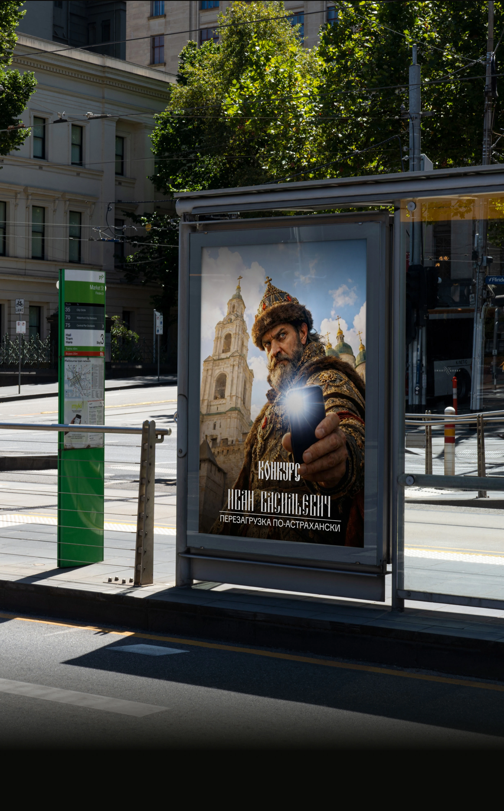

INTERDIZ / РЕКЛАМА И AI
Когда история оживает.
Иван Грозный — перезагрузка по-астрахански
КЕЙС / РЕКЛАМНАЯ КАМПАНИЯ01 / О ПРОЕКТЕ
История, которая смотрит в глаза.
Для конкурса, посвящённого Ивану Грозному, мы создали рекламную кампанию: выразительный исторический образ, серию афиш и телевизионный ролик.
К нам обратились администрация Астрахани и Астраханской области и АНО «Дельта». Задача — соединить исторический масштаб, театральность и современную визуальную подачу.

02 / ИДЕЯ
Не портрет.
Живой персонаж.
Мы искали образ, который будто обращается прямо к зрителю и приглашает его в историю. Так появились трон, свечи, золото, тяжёлые ткани и выразительный взгляд.
Кинематографичный свет и глубокие тени помогли создать атмосферу царской палаты, которая одинаково работает на афише и на экране.

03 / ПРОЦЕСС
Технологии и взгляд автора.
Нейросеть помогла собрать визуальную основу и исследовать варианты образа. Затем началась работа над деталями: арт-дирекшн, композиция и постобработка.
Для телевизионного формата особое внимание уделили чистоте изображения, стабильности деталей и сохранению характера лица персонажа.

04 / АФИШИ
Одна история. Разные сцены.
В серии афиш сохранили единый характер кампании: исторические сюжеты, насыщенные фактуры и выразительную типографику.

05 / НА НОСИТЕЛЯХ
История выходит в город.
Афиши и видео связаны общим визуальным языком. Образ легко узнаётся в разных форматах и сохраняет атмосферу проекта.

06 / РЕЗУЛЬТАТ
Прошлое в новом кадре.
Получилась цельная рекламная кампания: афиши и телевизионный ролик создали единый образ конкурса.
Генерация, дизайн и работа с композицией помогли представить исторического персонажа в современном визуальном языке.
История
продолжается.
РЕКЛАМА / AI / INTERDIZ